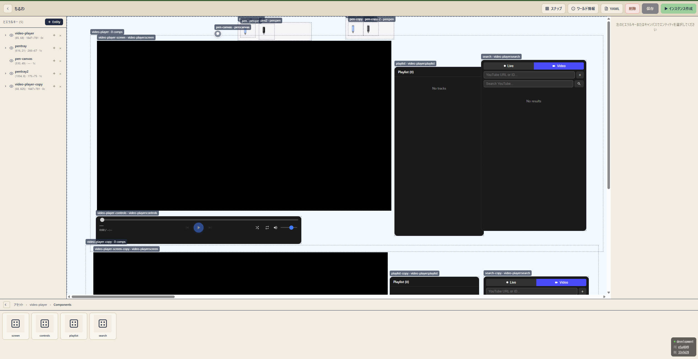

カーソルだけの
ゆるい繋がり
顔出しも声出しもなし。お互いの動線だけが伝わる、ちょうどいい存在感。
Ubichill は、みんなのカーソルが集まって、描いたり、観たり、いっしょに過ごす Web スペース。
URL を開くだけ。インストール不要、機能は誰でも URL で追加できる。

3D 空間も、顔出しも、専用アプリもいらない。ブラウザのタブ 1 つ分の気軽さで、だれかと同じ場所にいられます。
顔出しも声出しもなし。お互いの動線だけが伝わる、ちょうどいい存在感。
インストール不要。低スペックな PC やスマホからでも、ブラウザ 1 つで 1 秒で。
ペン・動画・付箋。機能は URL から読み込む mod。ゼロトラストの Worker サンドボックスで安全に動く。
サーバー同士が連合。どのサーバーの人ともフレンドになり、相手の部屋に入れる。
このページの中でも、あなたのカーソルはアバターになります。ドラッグで描いてみてください。
ワールドは mod の組み合わせ。同じ仕組みで、作業部屋にも映画館にもなります。
カメラも声もオフのまま、誰かが動いている気配だけ。ほどよく集中できる。
再生位置はみんなで同期。弾幕やカーソルで「いまのとこ」を指させる。
ペンを持って、そのまま描く。付箋を貼って、アイデアを並べる。
URL を配るだけで会場に。公開範囲と招待で入る人を決められる。
ワールドでできること
完全 CSR（Vite）と Go の WebSocket インスタンスサーバー。拡張はすべて Worker の中で動く mod として。
@ubichill/sdk だけに依存する Web Worker。状態は Ubi.state.sync で宣言するだけで全員に同期される。
ワールドは Kubernetes の CRD と同じ形の YAML。ワールド＝URL。GitHub に置いてもそのまま開ける。
権限はビルド時の静的解析で自動導出。使うときにブラウザのカメラ許可のように確認する。
apiVersion: ubichill.com/v1alpha1
kind: World
metadata:
name: chill-room
version: "1.0.0"
spec:
displayName: チルな作業部屋
capacity: { max: 20, default: 10 }
dependencies:
- name: pen
- name: video-player
initialEntities:
- id: pentray
components:
- type: pen:tray// 状態を宣言するだけで、全員に同期される（イメージ）
const likes = Ubi.state.sync(0);
Ubi.ui.render(() => (
<button onClick={() => likes.set(likes.get() + 1)}>
いいね {likes.get()}
</button>
));中央のサーバーは置きません。部屋のことは部屋のサーバー、人のことはその人のホームのサーバーが決める。ActivityPub（AS2）の形で、署名は Ed25519 + RFC 9421。
# Helm チャート 1 つで
helm repo add ubichill https://ubichill.github.io/ubichill
helm install ubichill ubichill/ubichill \
-n ubichill --create-namespace \
--set global.domain=<your-domain>global.domain から導出Ubichill は AGPL-3.0 のオープンソースです。独立した mod には追加的許可があるので、mod は自由なライセンスで配れます。